If two modules in a monolith are to communicate with each other, it is generally a simple in-memory method call. Microservices, unlike monoliths, rely on an external transport (such as a network) to communicate with each other (since modules are decomposed into independent services possibly running on different machines).
External communication channels are more likely to be vulnerable to potential threats from malicious actors compared to in-memory calls. Thus, by definition, external communication channels run with a higher aggregate risk.
To illustrate this point, I will use an example of an ecommerce application’s checkout process, as outlined in Figure 7-1. Imagine that the checkout process involves the application calculating the item’s price and charging the customer by looking it up in a repository. Upon checking out, the company then decrements this item’s available inventory.
Since an external communication channel inherently increases the aggregate risk of the application, security professionals need to add controls to ensure that potential threats are minimized. Encryption in transit is the most commonly used control that reduces the potential threat of messages being intercepted, tampered with, or spoofed. (Encryption is covered in detail in Chapter 3).
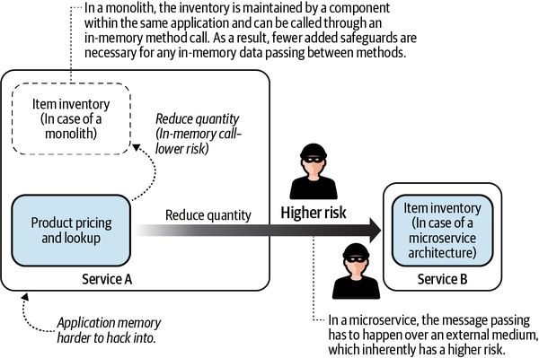
You can achieve interservice communication between microservices in many ways. Here are some common communication patterns. This list is not exhaustive and not mutually exclusive:
Using messaging queues such as AWS Simple Queue Service (SQS) or message brokers such as Apache Kafka
Using wrappers on top of HTTP or HTTP/2 such as Google Remote Procedure Call (gRPC).
Using a service mesh such as Istio or the AWS-managed AWS App Mesh
Transport Layer Security (TLS) is by far the most commonly used method of encrypting data in transit. This chapter discusses the various systems that AWS has in place for ensuring easy and simple end-to-end security of your applications using TLS and AWS ACM. I will also briefly introduce you to AWS App Mesh, a managed service mesh that helps microservices deal with boilerplate code that goes into securing and maintaining the additional complexity that external communication channels bring with it.
My focus in this chapter will be on the security aspects of these external communication channels. However, architects may also need to consider scalability, latency, and which ones dictate a lot of trade-offs in microservice architectures. For these issues, I will refer you to other reading materials since that is outside of the focus of this book. In the book Fundamentals of Software Architecture (O’Reilly), authors Mark Richards and Neal Ford go over a lot of the trade-offs associated with microservices. Building Microservices (O’Reilly) by Sam Newman is a great resource for designing microservices to address all of these scalability and throughput issues.
AWS Key Management Service (KMS) plays an important role in implementing TLS under the hood on AWS. A conceptual understanding of KMS (described in Chapter 3) will go a long way toward understanding the workings of TLS.
When it comes to HTTP communication, there are two very common ways in which malicious actors can gain unauthorized access to the data that is being communicated or is in transit. Figure 7-2 shows a standard communication between a service (Service A) and a credit card processor service (CCPS).
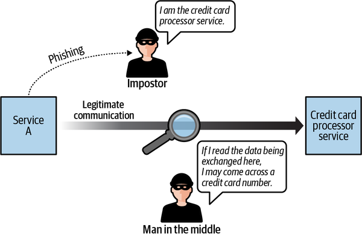
Let’s assume Service A needs to send sensitive information to the CCPS. There are two ways in which malicious actors may try to steal this sensitive information:
TLS reduces the risk of these potential threats by helping you implement authentication and encryption controls on the communication channels.
In the following section, I will explain in detail how authentication and encryption work to reduce this risk:
We live today in a world where encryption in transit is expected in almost every application that is designed. However, this wasn’t always the case. During the 1990s, most internet communications happened over unencrypted channels (see YouTube video on TLS), resulting in significant losses to the companies who used such insecure channels. Today, the lack of TLS may cause you to violate compliance requirements in most regulatory compliance standards. So, it is best to have TLS in addition to any other security controls you may have in place.
As you might remember from Chapter 3, in computing, the integrity of your data can be ensured mathematically through a process known as digital signing. Security in transit applies this process of digital signing to ensure the integrity of the communication in flight. Digital signing is the process of encrypting a document using a private key so that other parties can verify its authenticity using asymmetric encryption. To refresh your memory:
In an asymmetric key encryption, data encrypted by a private key can only be decrypted by a public key.
If a service (say, Service A) encrypts a document using its private key, we can assume that anyone with the public key of this service will be able to decrypt it.
A signed document implies that the signer had access to the private key. And conversely, a service that has access to the private key is able to sign any document using the private key, thus guaranteeing the integrity of the signed document.
TLS achieves authentication using public-key cryptography in the form of digital certificates. Digital certificates are electronic documents that prove ownership of private keys based on digital signatures. The certificate includes the public key of the server (called the subject), which is digitally signed by a trusted third party. If this signature of the third party is valid, then the client can trust the authenticity of the server’s public key and encrypt data using this public key.
Consider a scenario where you have two services talking to each other, Service A and Service B. Service A is the client that initiates the connection, and Service B is the server that provides the service. The purpose of TLS authentication is for Service B to prove its identity to Service A.
Service B knows that Service A trusts Trusted CA—CA1. Hence, Service B can entrust CA1 to help identify itself. Figure 7-3 shows how Service B can use CA1 to gain the trust of Service A.
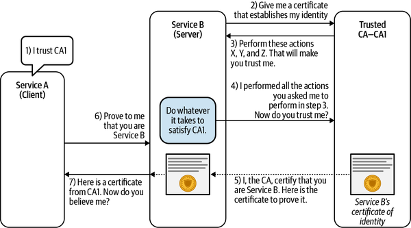
Here is how the process plays out:
Service A decides to trust any certificate signed by CA1 (that’s everything that can be decrypted using the public key of the CA1).
Service B decides to entrust the CA1 with proving its own identity.
CA1 asks Service B to perform certain “actions” that it thinks can be performed only by Service B. (This will ensure that Service B is able to identify itself to CA1’s satisfaction. I talk more about these actions later in this chapter.)
Service B performs these actions and waits for CA1 to confirm its identity.
If CA1 is satisfied with the actions that Service B performed, CA1 then sends over a digital certificate to Service B establishing its identity.
Using these steps, now TLS authentication between Service A and Service B is possible. If Service A asks for authentication from Service B, Service B can respond with the TLS certificate from Step 5.
A few things stand out in the exchange between Service A and Service B from Figure 7-3:
Because there is a trusted third party (trusted CA) willing to take on the responsibility of authenticating Service B and digitally signing its certificate, Service A can verify Service B’s certificate.
The trusted CA allows Service B to prove its identity. In other words, Service B knows what it needs to do to satisfy the trusted CA.
The trusted CA can securely share a private key with Service B that is paired with the public key that is present in the certificate. If an intruder managed to get their hands on this private key, they could use the certificate and impersonate Service B.
A certificate is only valid if the private key of the server (Service B) is indeed private. If this private key had been compromised or leaked, it is important to invalidate the digital certificate immediately since it no longer identifies Service B as the sole owner of the private key. The process of invalidating such certificates is called TLS certificate revocation.
The steps outlined in Figure 7-4 show how TLS is made secure, and the absence of any of them would compromise the design. AWS provides various services, as seen in Figure 7-4, that ensure all of these steps are properly followed while you issue certificates to all your services. I will describe how each of these services helps in securing the TLS setup later in this chapter.
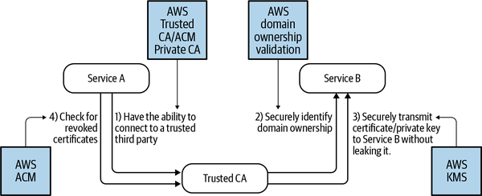
Digital certificates play an important role in any microservice system that uses HTTP communication. If the underlying private key that backs the certificate is compromised, an attacker can take over the identity of a service and exploit the trust that a service consumer places in the security of your system. Hence, digital certificates, just like any other security asset, require maintenance and management. Mismanagement of TLS certificates is a routine cause of service outages. Some examples include the outage caused at Microsoft due to their delay in renewing a certificate or the outage caused at Spotify due to an expired TLS certificate.
Hence, it is important to realize that the security benefits that come with secure communication come at an operational cost. In the next section, I will introduce you to an AWS service, AWS ACM, which aims at simplifying the process of certificate management for you.
At its heart, AWS provides a service, AWS ACM, for dealing with digital certificates. ACM certificates are X.509 TLS certificates that bind a service (URL) to the public key that is contained in the certificate. Think of a certificate as a driver’s license for the URL that identifies the server. Using ACM, customers can do the following:
Create digitally signed certificates for services that need TLS encryption
Manage private keys and public keys for all of the services
Automatically renew certificates for each of these services
Either use AWS’s publicly used shared trusted CA or set up a trusted private CA for internal services
On AWS ACM, a certificate exists independently of a server and is bound to the URL. The purpose of this certificate installation is to allow the new service to identify itself. AWS assumes the responsibility of installing and managing the certificate on an ACM-supported service once you configure it to do so.
As mentioned, one of the cornerstones of TLS is the presence of a trusted authority that can verify the identity of the server (to the satisfaction of the client). It is the server’s responsibility to ensure that any certificate of authenticity that it presents to the client is digitally signed by a CA that the client trusts.
This is where a public CA comes into the picture. AWS maintains a public CA under the name Amazon Trust Services, which is trusted by billions of browsers and systems throughout the world, almost making it a universally trusted CA. A certificate that is signed by this public CA can therefore be used in most client-server communication.
If you are a server, the steps for using this CA are simple. First, you need to create a certificate for the domain that you wish to get TLS-certified. You should then convince AWS Trust Services of your identity (using steps that I will discuss later in “Validating domain ownership”). Once that is done, you will receive the certificate from AWS. Most modern web browsers will be able to identify and trust any communication they have with your server. Figure 7-5 shows an example of such a certificate being issued to a server.
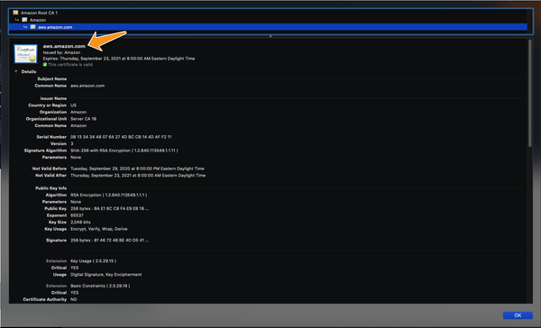
You might be wondering about two important questions:
Once a certificate is issued with a public key on it, what process does AWS use to transmit the corresponding private keys to your server without any intruder receiving them? After all, any possible leak of private keys can seriously compromise the entire TLS chain.
How do you convince the AWS trusted CA that you own the domain listed on the certificate? If everyone could get a certificate for any domain without much oversight into whether they really controlled the domain, it would be pointless.
I’ll answer these questions in the following two sections.
An ACM certificate verifies that the public key in the certificate belongs to the domain listed in the certificate. Essentially, it is stating, Trust that anything that can be decrypted by this public key belongs to the domain listed on the certificate.
The private key is encrypted and stored securely by ACM and can be accessed by multiple services. Once this private key is in the hands of a service, it will be able to use TLS to authenticate itself. The security of TLS rests on the ability of the certificate authority to transmit protected private keys. In this section, I’ll explain how this is achieved in practice and at scale:
The first time you request a certificate, ACM CA will perform any trust-related activities to ensure that you actually own the domain name the certificate is issued for. (See “Validating domain ownership”.)
ACM will then create a plaintext certificate on the CA and a public key–private key pair in memory. The public key becomes part of the certificate. ACM stores the certificate and its corresponding private key and uses AWS KMS to help protect it.
ACM will create a customer master key (CMK) in KMS to encrypt this certificate. This AWS managed CMK will have a key alias aws/acm.
ACM does not store the private key in plaintext form. Instead, it will use the CMK from Step 3 to encrypt the private key, storing only its encrypted ciphertext. This encrypted ciphertext can only be decrypted using KMS, which, as I pointed out in Chapter 3, has good access control mechanisms built into it. So it is safe to say the private key has been secured and never exposed.
Now that you have created a certificate, think of how this can be deployed to different services. As mentioned, to install a certificate on any other AWS service, you have to transmit the private key of the certificate so that the service can start identifying itself. ACM uses KMS grants to distribute the private key across AWS.
Figure 7-6 illustrates how AWS uses AWS KMS to create digital certificates at scale for your organization.
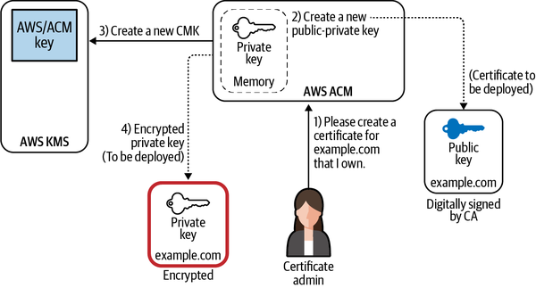
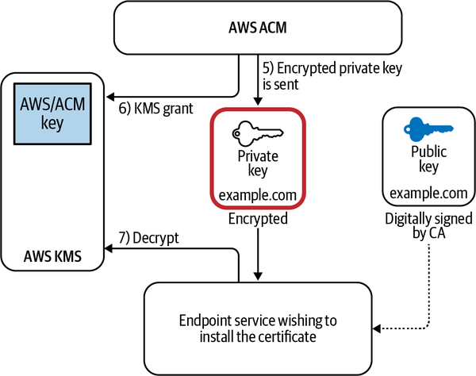
Recall the ciphertext private key that was encrypted back in Step 4. When you associate the certificate with a service that is integrated with AWS ACM, ACM sends the certificate and the encrypted private key to the service. The fact that this private key is encrypted makes it impossible for a malicious user to decode this key, and thus makes it impossible to falsely prove ownership of the domain.
ACM also creates a KMS grant that only allows the identity and access management (IAM) principal of the receiving service to decrypt this certificate.
Once it decrypts this certificate, the end service can then post this certificate in its memory to terminate TLS and identify itself anytime someone makes a request.
Every certificate owner should be careful to make sure that the private key backing the certificate is never exposed. If exposed, the certificate should be immediately revoked and a new certificate should be issued in its place.
For every new service that needs to get the certificate installed, ACM creates KMS grants that allow the new server to encrypt or decrypt using the private key, thus making this system extremely scalable in a microservice environment.
I have explained how a certificate is created for a particular domain. Additionally, I have discussed how you can distribute this certificate to multiple servers that host your microservices, thereby making it simple to manage secure communication in otherwise complex environments. This still leaves one important puzzle piece unanswered, though: how does ACM confirm that you own the domain that you specify on the certificate?
As mentioned earlier, browsers and clients around the world put their trust in the ability of this CA to check evidence of domain ownership quickly and accurately.
ACM provides two ways to prove domain ownership, as shown in Figure 7-8. You can select the validation method while issuing your certificate.
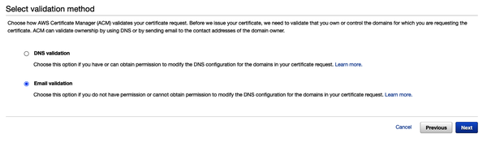
When you choose “Email validation” to generate a certificate, AWS sends an email to the registered owner of each domain listed on the certificate. To validate control of the domain, the owner of the domain or an authorized representative must go to the Amazon certificate approval website and approve the request. Further instructions are provided in the body of the email, as seen in Figure 7-9.
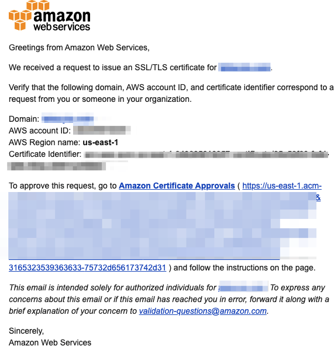
ACM uses CNAME records to validate that you own or control a domain. When you choose DNS validation, ACM provides you one or more CNAME records to insert into your DNS database. You are required to insert these records in your DNS hosted zone and AWS will verify the domain once it can see that you were indeed able to create these records.
If you own the domain through Amazon Route 53, it becomes even easier because ACM will automatically generate the CNAME record for you.
As I mentioned in the previous section, the purpose of a public CA is to use a globally recognized and trusted certification authority to certify the fact that the domain you claim to own is yours using the verification methods mentioned before. This is important in public-facing services where the server does not know who the end consumer is. In using a CA that is widely trusted, the server becomes more likely to be recognized by more clients.
However, not all communication happens to be public facing or with unknown clients. This fact is especially relevant for microservice applications where the communication might take place mainly within the application. In such a situation, the only parties that need to trust the CA are internal, and so using a widely accepted public CA is overkill.
This is where private CA comes in handy. Private CA gives you a few great advantages:
In a public CA, the CA certifies each domain for ownership as part of the process of issuing certificates. In contrast, a private CA eliminates this external check. Thus, internal communication continues between two internal services without having to go to any public authority, even for certificate validation, helping you maintain compliance.
You are not required to provide any proof of domain ownership. This means you can use internal domains for referencing your microservices that do not have to be registered with a top-level domain authority.
Services such as AWS App Mesh integrate seamlessly with ACM Private CA (ACM-PCA), which leads to a simpler setup.
Since the private CA is set up by an internal administrator, a client can trust the communication with the server based on certificates issued by this CA. The fact that both the provider and the consumer put a high degree of trust in this third-party certificate-issuing authority makes this communication secure.
ACM can set you up with a fully managed private CA that will issue certificates without domain ownership validation. This CA works closely with other AWS services without the need to communicate with any external CA.
The implicit assumption here is that the private CA should have high security and should never be breached. AWS ACM gives you a fully managed private CA where its security is handled under AWS Shared Responsibility Model (SRM), so that you do not have to worry. ACM-PCA uses the same security mechanism as public CAs to sign and distribute certificates on integrated services.
AWS ACM-PCA provides a lot of flexibility. Using a private CA, you can do all of the following:
Use any subject name (server domain URL)
Use any private-key algorithm supported by ACM-PCA
Use any signing algorithm supported by ACM-PCA
Specify any validity period of your choice
AWS Private CA can also be shared using AWS Resource Access Manager, as seen in Figure 7-10.
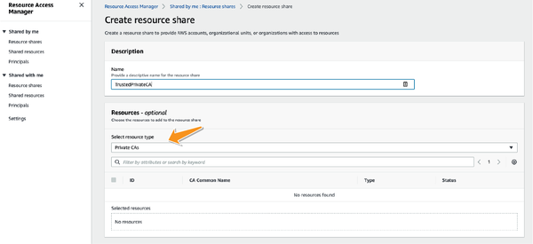
Since your private CA will be the key to any trust you have in communication across domains in your organization, keeping your private CA locked out of domain-specific accounts in a centralized location may help minimize the blast radius in case any of your domain accounts get hijacked.
In this setup, you can create a separate AWS account where all of your private CAs will live. Only the users with elevated trust privileges will be able to assume roles within this account to perform routine maintenance and modify the CA. This CA can then be shared with the rest of your domain accounts. This keeps a nice taxonomy of domains and avoids coupling your private CA with any of the domains within your organization, which maintains a totally autonomous entity with your organization.
ACM-PCA can create a complete CA hierarchy, including a root CA and subordinate CAs, with no need for external CAs. The CA hierarchy provides strong security and granular control of certificates for the most-trusted root CA, while allowing bulk issuance and less-restrictive access for subordinate CAs in the chain. Microservices can use the subordinate CAs for most of their known communication patterns while services such as service discovery, logging, and other centrally managed services can make use of the root CA. This flexibility is beneficial if you must identify a subject by a specific name or if you cannot rotate certificates easily.
The second important role that TLS plays in any given system is to provide end-to-end encryption of data that is in transit.
Contrary to popular belief, TLS in itself is not an encryption algorithm. TLS instead defines certain steps that both the client and the server need to take in order to mutually decide which cipher works best for communication between them.
In fact, one of the first steps of any TLS connection is a negotiation process where the client and the server mutually agree on which cipher works best for both of them.
This information exchange happens during the phase of communication known as TLS Handshake. TLS Handshake is also used to exchange encryption keys for end-to-end encryption. This makes TLS Handshake one of the most crucial, yet often overlooked, aspects of communication between any two processes.
As mentioned, encryption using TLS is done using a symmetric key algorithm. This means that both the server and the client use the same encryption key as well as an encryption algorithm that they agree upon to encrypt the communication channel with.
Various AWS services support a vast variety of ciphers, and the strongest cipher is chosen based on a waterfall process of selection. A waterfall process is where the server creates a list of ciphers that it supports in the descending order of strength. The client agrees to use the strongest cipher that it can support within that list. Thus, the server and the client mutually decide on what they believe is the best common algorithm that is supported by both parties.
AWS regularly updates the list of supported ciphers in its documentation; using a strong and secure cipher is vital to the security of your application. It is also important to note that some of the early implementation of TLS had considerable issues when it came to safety and security. Historic attacks such as the POODLE or the Heartbleed seemed to affect many early implementations of TLS and Secret Socket Layer (SSL). Hence, there may be a requirement from a compliance point of view to use TLS V1.1 or higher.
When an algorithm is selected, the client and the server have to agree on an encryption key. They use a key exchange mechanism (such as the Diffie–Hellman key exchange), to exchange encryption keys that can then be used to encrypt all the data that needs to be sent over the channel.
A key weakness of any security system is the key becoming compromised. And based on what we have discussed so far, TLS should be no exception.
Consider a scenario where some malicious actor happens to be snooping on all of the encrypted traffic that flows between two secure services engaged in a secure communication channel that is storing every single exchanged message in its encrypted form. Until this malicious actor has the server key to decrypt these messages, all is good. But what happens if this key somehow ends up in the actor’s hands? Will the actor be able to decrypt every single piece of historic communication that took place?
We can use perfect forward secrecy (PFS) in our TLS configuration on the server side to ensure that compromising the server key does not compromise the entire session data. In order to have PFS, you need to use a cipher that supports it, such as the elliptical curve Diffie–Hellman or any of the other popular ciphers that support PFS, to protect your application from such attacks.
AWS supports a wide range of ciphers that support PFS as outlined in this document.
As you may have noticed, TLS does involve a fair number of steps when it comes to establishing and maintaining communication. TLS Handshakes, version negotiation, cipher negotiation, key exchange, and others are in no way simple operations. Furthermore, the upkeep of certificates may be an added responsibility that is thrusted on all containers that may hold microservices within them.
ACM allows the creation of certificates that are tied to a URL, and with the certificate distribution mechanism, allows you to deploy ACM certificates to multiple servers across the AWS infrastructure. Therefore, it may be possible for an architect to be more strategic in deciding who performs these responsibilities.
In any system, the point where all of these TLS-related activities are handled is often called the point of TLS termination. So the natural question in a microservice environment is: what should be your point of TLS termination? Should it be individual pods? At the load balancer? Does it make sense to assume that a private microservice operating on its own subnet does not require TLS? These are all questions that your security plan should aim to answer.
One way of making TLS efficient is to terminate TLS at the edge system. This may work in cases where the private network that exists beyond the edge is completely private. This does compromise on some elements of security in favor of convenience. On the other hand, you could also terminate your TLS at a load balancer instead of the microservice pod.
Figure 7-11 shows a typical organization that decides to terminate TLS at the edge (public-facing endpoints) of the system. This means that internal backend services such as Service A, Service C, and Service D are not required to perform the TLS Handshakes when they communicate with one another, thus increasing the simplicity and efficiency of internal communication.
Any request from the end user is still secure since TLS is indeed enforced between the end user and the public endpoints (see 1 in Figure 7-11); intruders on the public internet are unable to intercept any such communication. However, such a setup assumes that all internal communication among services A, C, and D can be trusted. As mentioned in Chapter 5, this may not always be the case. A compromised insider such as (2) can still intercept the communication between endpoint C and Service D, thus compromising the security of this communication. Similarly, due to the lack of strong authentication that TLS would have otherwise provided, an impersonator could possibly masquerade as a legitimate microservice, as seen in (3).
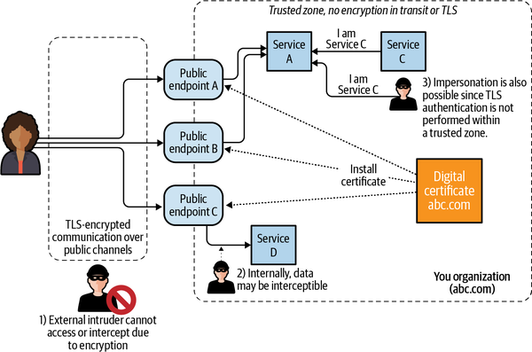
To sum up, what Figure 7-11 tells us is that TLS termination is a trade-off, and where it should be performed depends on the confidence you have in the trust zone of your application. Having your application’s termination point as close as possible to your application will make it slightly more secure from insider attacks. However, it also means the TLS termination logic is more redundantly dispersed throughout your infrastructure since each service that you own will need its own TLS termination mechanism.
A security architect should find out which part of the communication chain can be trusted enough to engage in unencrypted communication, and beyond which point every communication channel has to be encrypted. In my experience, TLS is often terminated at load balancers. If you use AWS load balancers, terminating TLS at the Elastic Load Balancing is a fairly common practice.
Given this complexity, a philosophical question to ask is: should the microservice (that was designed to handle a business use case) be expected to handle the heavy lifting related to TLS termination and end-to-end encryption?
In some applications, end-to-end encryption may be a compliance requirement; therefore, microservices have no choice but to terminate TLS on containers or at the application endpoints, instead of load balancers.
In “TLS Termination and Trade-offs with Microservices”, I introduced the trade-off that security architects have to make in order to decide where TLS termination logic lives. I presented two alternatives, the first of which is terminating TLS at a load balancer or content delivery network (CDN), while the second is to allow applications or microservice containers to terminate TLS. In this section, I will assume you have decided to allow TLS termination to be performed at the load balancer. This process is also called TLS offloading. In order for an AWS service to support TLS termination, you need to use ACM and install the TLS certificate on top of the service that is responsible for TLS offloading. ACM allows you to renew your certificates automatically once they expire, so you won’t have to remember to do it manually.
An application load balancer (ALB) supports TLS termination. The load balancer requires X.509 certificates (SSL/TLS server certificates) that are signed by a CA (either private or public).
Since ALB always looks at requests at the application layer, it has to terminate all TLS connections in order to analyze application-level details. In other words, end-to-end encryption is not possible on services that use ALB. You can, however, install any of your ACM certificates or import any of your existing certificates to install on the ALB. This way, your application code is not affected by any TLS logic. However, if your regulatory compliance requirements require end-to-end encryption, you may have to re-encrypt data at the load balancer in order to send it back to the cluster nodes or the microservice that is the final recipient of this data. Figure 7-12 shows how you can add an HTTPS listener on an ALB using the AWS Management Console.
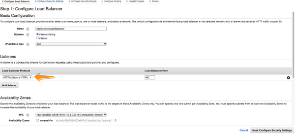
To install the certificate:
Navigate to the Load Balancer screen using the AWS Console and add a listener.
For the protocol port, choose HTTPS and keep the default port or enter a different port.
Figure 7-13 illustrates these steps.
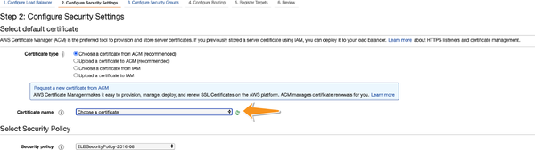
A network load balancer (NLB) operates at the network layer of the OSI model and therefore, does not need to access application layer data. This means an NLB has the option of not terminating TLS and can allow end-to-end encryption if needed using TLS passthrough.
However, if you don’t need end-to-end encryption, you can always terminate the TLS at the NLB by adding your ACM certificate to the NLB, as seen in Figure 7-14.
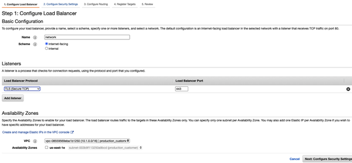
Figure 7-15 shows how you can add an ACM certificate to your NLB.
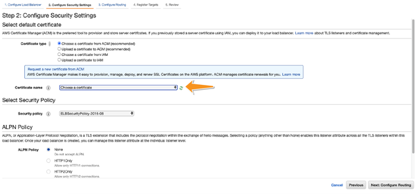
Just as microservices calling one another can use the load balancer to terminate TLS, CloudFront can also terminate end-to-end encryption for services. As you know from Chapter 6, CloudFront provides a caching layer for content on the various edge locations that AWS provides throughout the world.
However, caching provides a challenge when it comes to encryption, since the cache check requires your distribution to terminate TLS in order to view the contents of the request and check for their presence in the globally cached origin. Hence, similar to the ALBs, you are required to install your ACM public certificate on the CloudFront distribution and end TLS there.
Figure 7-16 describes how you can add the ACM certificate to a CloudFront distribution and enable it to terminate TLS connection. When using CloudFront, you need to specify all the domains you wish to use on the certificate. Fortunately, ACM supports up to 10 domains per certificate by default (and more if you create AWS support tickets). The CloudFront distribution also supports wildcard domains, increasing the number of domains it can support.
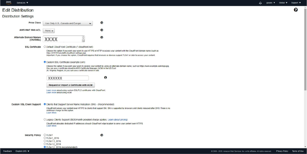
Since CloudFront uses fully managed, shared edge servers to serve content, no single terminal server is responsible for content distribution. Furthermore, AWS hosts multiple websites at each edge location, and multiple websites may share the same IP address. So it becomes difficult for CloudFront to serve the right certificate if a request is made to one single IP address. CloudFront handles this by using a technique called Server Name Indication (SNI), which makes it possible to use a single IP address for multiple SSL-supported sites. Amazon CloudFront delivers content from its edge locations using the same level of SSL security used in its dedicated IP service.
SNI is like sending mail addressed to a multi-unit building rather than a house. When mail is addressed to any specific unit, in addition to the street address, an apartment number is also needed.
However, this extension may not be supported by all legacy browsers and hence, if you want to add support for legacy browsers, you have the option of using dedicated IP addresses for an extra fee.
Encryption in transit is an important security requirement for most compliance frameworks. HIPAA, Payment Card Industry Data Security Standard (PCI DSS), and many other standards explicitly require data to be encrypted while it is in flight, and Amazon Trust Services provides a globally recognized and accepted certificate authority to help users meet these compliance requirements. With AWS Private CA, organizations can add new services at scale and still expect end-to-end encryption for microservices.
It is not uncommon for the number of certificates in microservice environments to be quite high. Thus, internal services that need to expose APIs across domains are advised to carefully analyze their security benefits and the complexity involved. There is also a monetary charge associated with using encryption in transit.
Public ACM certificates themselves are free. So you can create as many certificates as you please for any of your public domains. Private ACM certificates generally incur a one-time fee. A few exceptions to this rule are private certificates installed on AWS services such as AWS Elastic Load Balancing, where the private key is never disclosed to the end user. Private certificates that do not have access to the private key are free on AWS.
ACM-PCA also has a monthly fee associated with it. At the time of writing, ACM-PCA costs $400 per month and is billed monthly, until it is deleted.
Now that a solid foundation for TLS has been laid, let’s look at how TLS can be used in the various communication patterns. As a reminder, microservices can talk to one another in these forms:
Using asynchronous REST
Using messaging queues such as AWS SQS or message brokers such as Apache Kafka
Using wrappers on top of HTTP/2 such as gRPC (which is a thin application layer wrapper on top of HTTP/2)
Using a service mesh such as Istio or the AWS-managed AWS App Mesh
I have already talked about how REST-based communication that happens using plain HTTP can benefit from TLS. In the next sections, I will move to the other options that are available.
Message brokers or queuing systems are commonly used for cross-domain communication in microservices. Queuing systems help in reducing coupling (cross-domain interdependence) between two domains by allowing the two microservices to scale independently of each other.
Consider the communication between two services (say, Service A and Service B). By using a queuing service instead of sending a message directly to the other service, the messages will pass through an intermediary. This queuing service acts as a buffer between two services. Service A will place any message that it wants to send to Service B on this queue. Service B will listen to messages on this queue and process them at its own pace.
Once processed, Service B will place the response back on a different queue that Service A will listen to. Figure 7-17 illustrates this example.
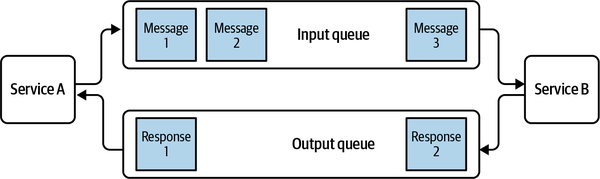
This form of a decoupled, queue-based communication pattern has two advantages:
If due to a sudden spike in throughput, Service A starts sending more messages per second than Service B can handle, the input queue can simply expand until Service B can either scale up capacity or wait until the throughput reduces.
If Service B temporarily goes down for a few seconds, the input queue can still retain the messages for Service B to process after it comes back up again.
Communication through message queues occurs asynchronously, which means the endpoints that publish and consume messages interact with the queue, rather than with each other. Producers can add messages to the queue once they are ready, and consumers can handle messages only if they have enough capacity. No component in the system is ever stalled waiting for another. Most microservice architects are aware of these benefits, so queuing systems have become somewhat synonymous with microservice communication.
Since AWS SQS is the easiest to integrate with the rest of the microservice application, I will use it here as an example of a message queue. In SQS, AWS provides a simple queuing system while assuming the responsibility of the infrastructure, its resiliency, and scalability as part of the SRM. However, the principles apply to any other queuing application.
Going back to Figure 7-17, message queues aim to replace the direct, synchronous, encrypted connection between Service A and Service B. From a security perspective, this means communication between Service A and Service B should continue to be encrypted after the use of a message queue. In order to ensure that encryption is maintained while a message is in transit, I will break its journey into two parts:
After it has been placed on a message queue
While it’s in flight between the service producer and the queue
Every message that is placed on the SQS queue can be encrypted at rest using AWS KMS. So, in order to obtain a true replacement for TLS-based synchronous encryption, the first step is to ensure that all of the AWS SQS queues involved in this communication encrypt their content at rest.
The second time to enforce encryption is when clients (Service A and Service B) connect with SQS. Even though the queue itself is encrypted, a man-in-the-middle attack could intercept messages before or after they have been taken out of the queue.
The solution to this problem is to enforce a TLS connection any time a client connects to an SQS queue. This is made possible with the use of a resource-based IAM policy, as discussed in Chapter 2. The constraint aws:SecureTransport ensures that any client that connects to an SQS queue does so using TLS:
{
"Version": "2012-10-17",
"Id": "arn:aws:sqs:region:aws-account-id:queue-name/DenyNonTLS",
"Statement": [
{
"Effect": "Deny",
"Principal": “*“,
"Action": "*",
"Resource": "arn:aws:sqs:region:aws-account-id:queue-name",
"Condition": {
"Bool": {
"aws:SecureTransport":"false"
}
}
}
]
}
This policy will deny access to the queue to anyone who does not connect using TLS.
gRPC is a popular protocol that is increasingly used by microservices to communicate with one another. gRPC is an open source remote procedure call (RPC). For transport, it uses HTTP/2 and protocol buffers as interface descriptors. A number of features are available, such as authentication, bidirectional streaming and flow control, bindings for blocking and nonblocking traffic, cancellation, and timeouts.
gRPC has the benefit of being built on trusted, tested infrastructure. HTTP/2 is a relatively new protocol, but HTTP has existed for quite some time as a transport protocol, and it is for this reason that many of its security considerations have been examined by experts throughout the world. gRPC has been widely embraced by microservices for many of its benefits, including scalability and customizability, among others. I will, however, focus on how AWS can help when it comes to securing an in-transit connection using gRPC.
If your microservices want to use gRPC to communicate with one another, AWS ALB allows you to configure gRPC as a target. gRPC can be enabled on any targets in an ALB, as highlighted in Figure 7-18.
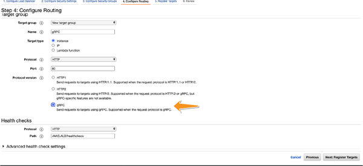
As mentioned, gRPC still uses HTTP/2 as its transport, so encryption on gRPC can still be achieved using TLS as for most of the other HTTP connections. The TLS certificate is installed on the ALB when the load balancer is chosen. Doing so will ensure encrypted gRPC communication between the pods and the ALB.
TLS for gRPC can also be implemented using a service mesh, discussed later in the chapter.
Chapter 6 introduced Mutual TLS (mTLS). Let’s now revisit the concept of mTLS and I’ll explain how it makes communication more secure. The TLS protocol uses X.509 certificates to prove the identity of the server, but the application layer is responsible for verifying the identity of the client to the server. mTLS attempts to make TLS more secure by adding client validation as part of the TLS process.
To paraphrase the Financial Services Technology Consortium: Better institution-to-customer authentication would prevent attackers from successfully impersonating financial institutions to steal customers’ account credentials; and better customer-to-institution authentication would prevent attackers from successfully impersonating customers to financial institutions in order to perpetrate fraud.
As discussed in “TLS Handshake”, a client trusts a CA while the server presents a certificate that is signed by the CA. Upon successful establishment of the connection, both parties can communicate in an encrypted format. mTLS requires that both the client and server establish their identities as part of the TLS Handshake. This additional step ensures that the identities of both parties involved in a communication process are established and confirmed. Certificate verification is an integral part of the TLS Handshake. With the requirement for client validation, mTLS essentially mandates that clients are required to maintain a signed certificate that trusted CAs vouch for, thus making client verification possible.
This would mean installing a signed certificate on each of the microservice clients that wants to make any outgoing request, unlike a load balancer that could be used to terminate TLS on the servers. An operation of this magnitude requires significant investment in infrastructure and security in order to implement such a setup.
As a result of this added complexity and the amount of work required to implement mTLS, it is rarely seen in setups that use traditional servers or container systems. However, mTLS is significantly easier to implement when two AWS-managed services talk to each other. This is why API Gateway and AWS Lambda can easily communicate with each other using mTLS.
The most complex part of a microservice architecture is often communication between services, rather than the actual services themselves. Many of the mechanisms (such as TLS termination, mTLS, etc.) used to secure the communication channels add complexity to the application. This added complexity may lead to more work on the application side. This is especially true if your services run on pod-based environments such as Amazon Elastic Kubernetes Service (EKS), AWS Elastic Container Service (ECS), or plain AWS Elastic Cloud Compute (EC2).
Although my focus is on TLS and the security of cross-pod communication, there are other cross-pod communication concerns. Communication complexities like observability, logging, distributed tracing, and traffic monitoring need to be addressed by microservices.
It goes without saying that microservices, when introduced for applications that are not at scale, may end up adding complexity to the working environment of every application. Although I have always been an optimist on microservices, they do have downsides. Many of these shortcomings are related to the increased complexity and, as a result, additional work required on the infrastructure level to support the microservice approach. This additional work is repetitive and has little to do with business logic. Service meshes are an additional layer that can be implemented in a microservice architecture entirely dedicated to such repetitive tasks. By encapsulating infrastructure logic into a service mesh, services can continue to concentrate on business logic.
Before service meshes were introduced, the logic related to TLS termination, observability, and trace logging was embedded inside application code, resulting in it being bloated. What made matters worse was that since this logic crossed pods, this application had to be kept in sync with other pods. One solution was to introduce a proxy application that would run alongside existing containers. Any aspect related to communication with other pods could be outsourced to this proxy service that ran alongside the original pod. This would include network management, request logging, and most importantly from our point of view, TLS.
These proxies would intercept every request that takes place between multiple applications. In order to reduce latency, these proxies run right next to the original service as sidecar containers. I will discuss a proxy application called Envoy to implement a service mesh. Envoy is an open source proxy implementation designed specifically for cloud applications, and it works well with AWS services.
Figure 7-19 shows how a traditional communication between Service A and Service B can be transformed into a proxy-based communication by introducing a sidecar proxy to outsource network-related activities.
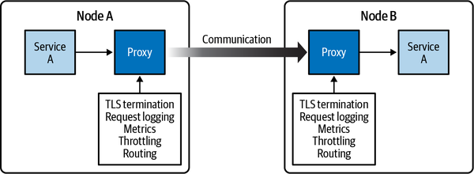
You can imagine a new network where, instead of services connecting to one another, each service is connected to a proxy to form what is called a virtual service that represents the original service. All of the proxies are then connected to one another, creating a mesh. This is exactly what a service mesh aims to create. When a mesh of proxies communicates with one another, the plane of microservices (known as the data plane) is transformed into a virtual service plane. A mesh is illustrated in Figure 7-20.
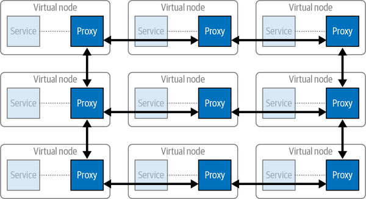
Services in this picture can be as lean as possible, focusing solely on business logic, while the proxies can create a mesh of TLS endpoints that can now handle end-to-end encryption for all processes. This still leaves one issue unsolved. There needs to be a centralized service responsible for keeping all of these services in sync with one another. This way, any change of communication protocol between endpoints can be propagated seamlessly to all of the working proxies.
Service meshes are neither new nor an invention of AWS. They borrow from service-oriented architecture and have been around in some form for at least a decade. Despite this, their adoption has been limited due to the fact that managing a service mesh within an already complex microservice architecture can be a daunting task. You can see that Figure 7-20 shows nine proxies and all of these have to be kept in sync with one another for communication to be effective.
Proxies require a lot of maintenance, so how do they get synchronized? As an example, if you outsource the management of TLS to these proxies, you need some mechanism of keeping the TLS certificates up to date and renewed. If you had to do this individually on each proxy, the overhead would have been as bad as it would be without a service mesh.
This is where a centralized control plane comes into the picture. A control plane is a mechanism that controls all the proxies by sending them instructions from a centralized location.
AWS provides a fully managed service that manages the control plane for this mesh of envoy proxies in the form of AWS App Mesh. AWS App Mesh lets you communicate across multiple applications, infrastructures, and cloud services using application-level networking. App Mesh gives end-to-end visibility and high availability for your applications. Figure 7-21 illustrates how a managed proxy controller can help keep proxies in sync.
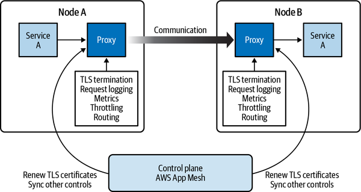
AWS App Mesh provides diverse integration options for microservice containers of every size and complexity, as it connects only at the application level. The focus here is on the use of AWS App Mesh with Kubernetes, but this is not the only application that works with AWS App Mesh. It can be used with microservice containers managed by Amazon ECS, Amazon EKS, AWS Fargate, Kubernetes running on AWS, and services running on Amazon EC2.
As mentioned, App Mesh is made up of individual components:
Say you have a mesh of microservices for displaying the account information of a customer, and you get a request to find the balance of the following user:
http://balanceservice.local/getBalance/{id}
The flow is as follows:
The virtual gateway is the first service that gets the request since it is on the edges of the mesh and is the place where the incoming TLS is terminated.
The virtual gateway route identifies that this request belongs to the balance service based on the routes that it has, and it forwards it to the right virtual service.
The virtual service forwards it to the virtual router.
The virtual router looks at its existing targets and decides which node should process this request.
The virtual nodes then work with their containers to come up with a response.
Figure 7-22 illustrates this flow.
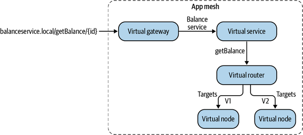
Now let’s discuss some of App Mesh’s security aspects. As described in the introduction, the idea is to outsource the handling of TLS validation and termination to the Envoy proxy so it can perform the Handshakes, TLS validation, and end-to-end encryption of communication channels at mesh endpoints.
The first step toward TLS validation is the certificate check that requires a trusted CA. AWS App Mesh works seamlessly with AWS ACM-PCA. Using ACM-PCA simplifies the process of certificate installation and renewal.
AWS App Mesh provides you with three options: AWS ACM-PCA, Envoy Secret Discovery Service (SDS), and a local hosted certificate for TLS validation. Since ACM-PCA integrates easily with AWS and simplifies the renewal process for certificates using auto-renewal, it is the tool that I recommend.
TLS validation through certificate checks can be enforced at the virtual gateway as well as at each virtual node. In App Mesh, TLS encrypts communication between the Envoy proxies (which are represented in App Mesh by mesh endpoints, such as virtual nodes and virtual gateways). AWS App Mesh ensures that each running Envoy proxy has the latest renewed certificate within 35 minutes of renewal, thus taking away the added complexity of renewing Envoy certificates. In order to use Envoy proxies, the StreamAggregatedResources action must be allowed for the mesh endpoint that runs the Envoy proxy.
This can be added by applying the following policy:
{
"Version": "2012-10-17",
"Statement": [
{
"Effect": "Allow",
"Action": "appmesh:StreamAggregatedResources",
"Resource": [
"arn:aws:appmesh:us-east-1:234562343322:mesh/
<appName>/virtualNode/<>"
]
}
]
}
Once the permissions have been set, you can specify the CA that App Mesh can use to validate certificates while creating a virtual gateway or a virtual node. You can enable TLS validation for any outgoing requests to the backends as well as perform TLS termination for any incoming requests. Figures 7-23 and 7-24 show how you can enable TLS validation for a virtual gateway.
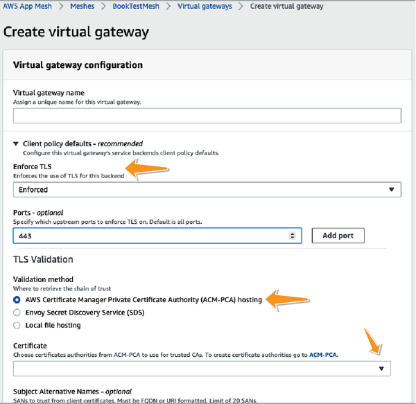
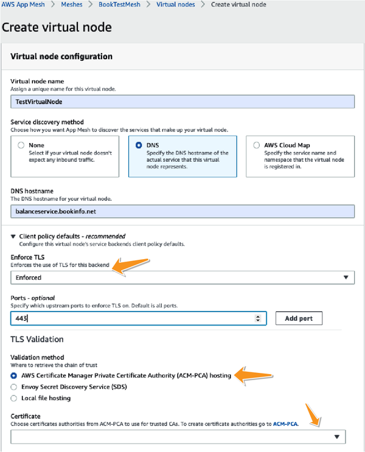
From a security perspective, it is a good idea to enable “strict mode,” as seen in Figure 7-25.
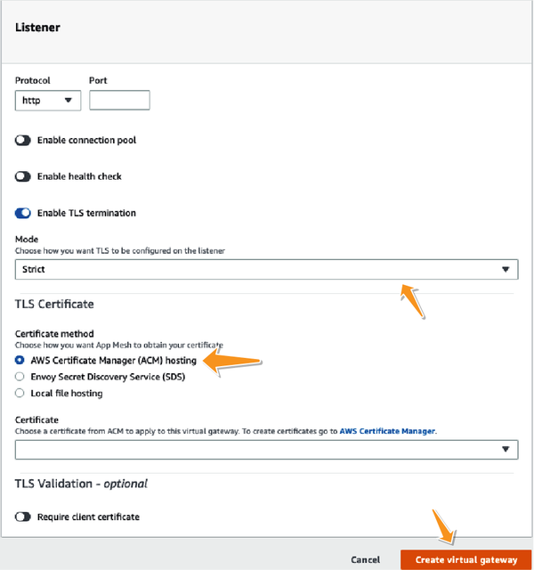
Let’s now revisit a security construct that I introduced briefly and disregarded: mTLS. If you recall, the reason why mTLS proved to be impractical was mainly due to the added complexity of managing TLS certificates for all the clients that communicate with one another. But AWS App Mesh, as described, helps install certificates on all of the Envoy proxies. It also helps keep these certificates up to date. So the added effort of maintaining certificates no longer exists on services that use AWS App Mesh. As a result, it is now no longer impractical or unfeasible to use mTLS. In fact, mTLS is supported fully by AWS App Mesh and at times recommended for applications that need client validation for additional security purposes.
mTLS can be enabled for virtual gateways by enabling the “Require client certificate” option for TLS validation on mesh endpoints.
TLS can be enabled for trust inside a mesh by configuring server-side TLS certificates on the listeners and client-side TLS certificates on backends of virtual nodes.
TLS can be enabled for communication outside a mesh by enabling specified server-side TLS certificates on the listeners and client-side certificates on the external services that end up connecting to a virtual gateway. The same CA should be used to derive the certificate by both the client and server for mTLS to work.
App Mesh does not store certificates or private keys in any persistent storage. Instead, Envoy stores them in memory.
You can use Envoy’s SDS or host the certificate locally to enable the chain of trust and configure mTLS, as seen in Figure 7-26.
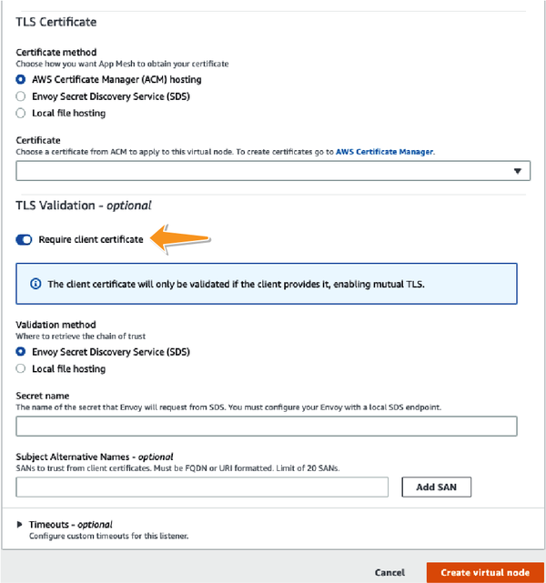
Although App Mesh enables mTLS authentication and encryption between Envoy proxies and services, communications between your applications and Envoy proxies remain unencrypted.
Unlike other microservice communication patterns, in my opinion service meshes fundamentally change the way apps interact with one another. Although it is true that once implemented, a service mesh can reduce the complexity of commonly used security infrastructure, the initial implementation is a fairly involved task in itself. A service mesh requires buy-in from every team that decides to use it.
Though I have focused on AWS App Mesh, it is not the only service mesh solution available for microservice users. Istio, Consul, and Linkerd are just some of the many popular service mesh solutions available in the market today, and each has great features to offer. However, AWS App Mesh does simplify the implementation of a service mesh by integrating easily with the rest of the AWS infrastructure.
Integrating a service mesh into a microservice architecture is not a simple task. It is more common for greenfield projects to use a service mesh than for projects that have an established microservice structure. Of course, it would be impossible to cover everything related to service meshes in a short section. If you believe service mesh provides value, AWS has great documentation for AWS App Mesh.
From a cost perspective, there is no additional charge for using AWS App Mesh. You pay only for the AWS resources consumed by the Envoy proxy that is deployed alongside your containers.
This section talks about how TLS can be enabled and enforced when using serverless microservice technologies—specifically, AWS Lambda.
As mentioned, API Gateway mainly works at the edge of your network to provide you with the ability to accept incoming requests. Clients need to support TLS 1.0 and ciphers with PFS, like ephemeral Diffie–Hellman (DHE) and Elliptic-Curve–Diffie-Hellman Ephemeral (ECDHE).
Your API Gateway custom domain can enforce a minimum TLS protocol version for greater security.
If you use API Gateway to call any internal service, you have two choices. If you call the Lambdas or any other serverless service, you can use the private AWS network to pass all your data, thus ensuring proper security in transit.
HTTP APIs now give developers access to Amazon resources secured in an Amazon Virtual Private Cloud (VPC). When using technologies like containers via ECS or EKS, the underlying Amazon EC2 clusters must live in a VPC. Although it is possible to make these services available through Elastic Load Balancing, developers can also take advantage of HTTP APIs to front their applications as shown in Figure 7-27.
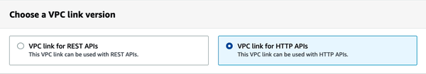
If you want to integrate privately, you need to have a VPC link. By using this technology, multiple HTTP APIs can share a single VPC link. HTTP APIs on the API Gateway can connect with an ALB or an NLB or with AWS Cloud Map, as seen in Figure 7-28.
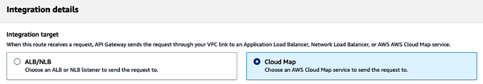
Alternatively, in places where you cannot enable VPC link to communicate with backend services, you can force certificate checks for backend services by generating a client certificate on the API Gateway, as shown in Figure 7-29.
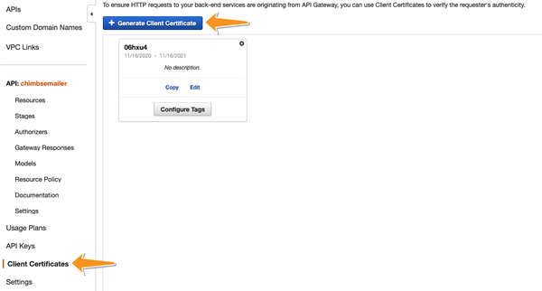
AWS API Gateway enables you to cache your endpoints’ responses, which makes it faster and reduces the number of calls your endpoints get. AWS allows you to encrypt all of the cached storage on AWS API Gateway, thus protecting your data from unauthorized access.
Another common attack on network systems is a cache invalidation attack where an attacker may try to maliciously invalidate your cache. You can either allow all clients to invalidate the cache or use the IAM policy to decide who gets to invalidate your cache by attaching this policy to authorized clients:
"Action": [
"execute-api:InvalidateCache"
],
Encryption can be enabled for API Gateway cache through the AWS Management Console, as seen in Figure 7-30.
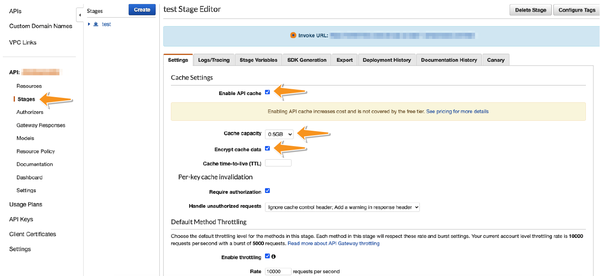
Given the single-responsibility principle, there are times when only certain secure microservices are permitted to read certain sensitive data. For example, if the data that your application needs includes a user password or medical records, only servers that operate inside a very secure perimeter may be allowed to read this information in plaintext.
AWS allows the encryption of sensitive data fields at the edge locations. This way, data is encrypted as close to the end user as possible and sent only in an encrypted format over the wire. Until this data reaches the right service that has the secure authorized access to this data, the plaintext of this sensitive information is kept hidden from the rest of the microservices. Figure 7-31 shows a typical microservice setup where a request passes hands between various services before reaching its intended destination (service d).
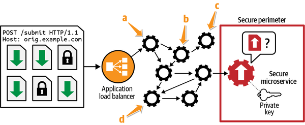
As an example, even if the data is sent through a variety of microservices (a, b, c, d), the services are not able to decipher this data until it hits the secure microservice.
Field-level encryption makes use of an asymmetric key encryption by using the private key that only the secure microservice inside the perimeter has access to. Ensuring that sensitive data is never passed unencrypted through the rest of the network also means that our external and edge-level microservices do not have to face strict security controls:
The microservice that is ultimately able to decrypt this sensitive data shares its public key with the CloudFront distribution, which distributes it to the edge locations.
Sensitive data is encrypted using this public key.
This data can only be read by decrypting it with the private key.
Since the private key is secret and only known to the secure microservice, no other service is able to decrypt this data.
While services can forward encrypted data and work on functions, such as validation of the request or cleaning of it or on any other parameters present in this request, they do not ever get to read this sensitive data.
This process is illustrated in Figure 7-32.
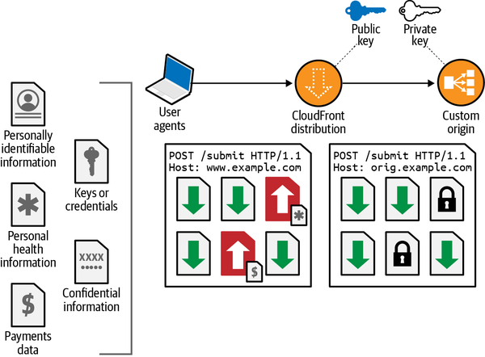
Follow these steps to use field-level encryption:
Go to the CloudFront management page in the AWS Management Console.
Choose “Add your public key” to the distribution.
Create a profile that tells CloudFront which fields to encrypt.
To use field-level encryption, link a configuration to a cache behavior for a distribution by adding the configuration ID as a value for your distribution.
Here are the advantages of field-level encryption:
Since everything happens at the edge, it reduces the blast radius for sensitive data. Also, since the encryption is handled as part of the AWS SRM, it reduces operational overhead.
Other microservices do not have to comply with strict sensitive data protection protocols since they never have to deal with unencrypted sensitive data.
It is easier to meet various regulatory standards such as PCI-DSS since unencrypted data is never sent over the wire, not even on a private AWS network.
This chapter considered an often-overlooked aspect of any application: cross-service communication, especially the security of information while it is in transit. In a microservice environment, communication among services is relatively common. This communication may take place over mediums that are not necessarily secure, and as a result, your application security can be undermined.
In general, you want to separate infrastructure concerns and security issues from application logic. This means that your application microservices focus more on business logic while the infrastructure takes care of the security needed to communicate with other microservices. This is the only way you can ensure and enforce the single-responsibility principle in microservices. Having said that, simplicity should never be an excuse for a compromise on security.
I started the chapter by looking at ways in which you can simplify the setup of your microservices without losing the security associated with traditional systems. You can achieve this by having a DNS architecture that helps in canonical naming and referencing of services by their names instead of their hosts. This helps decouple microservices from their deployments, thus making applications infrastructure (and stage) agnostic. I discussed how to ensure that security extends not just at the data stored in various systems, but also as it moves between two services. TLS is the crux of this encryption in transit, and we looked into the details of how AWS implements TLS at various stages of your application. Finally, I ended the chapter by discussing how TLS offloading helps you maintain leaner applications.